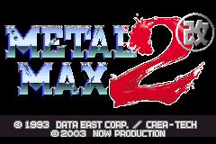
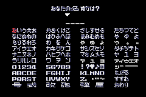

Metal Max 2 Kai (Japan)
EEPROM 64K VRAM Tile Sheet
Cartridge Identity
- Game Code
A9TJ(FamilyA9T)- Header Title
METALMAX2KAI- Maker / Revision
0N/ rev0- ROM Size
- 4.0 MiB (4,194,304 B)
- Save Media
EEPROM 64K- SHA-256
faca8d35e51436e070d3f960a52b5f0d9ad74f39fb48d3de7b67bc84511e8b04- Engine / SDK Group
comm-022(10 families)
Screenshots


ROM Assets, Compression & Audio
- BIOS Compression
- LZ77 (
0x10): 0 streams · RLE (0x30): 0 streams - ROM Pointer Tables
- 13 tables (0 pointing to validated compressed streams)
- SDK Backup Tags
EEPROM_V122,EEPROM_V122- VRAM / Palette Snapshot
- 1,060 non-zero 8×8 tiles · 14 palettes · Direct ROM matches: 111 VRAM blocks, 1 palette blocks

Hardware MMIO Subsystems
ppu_display0x800168c,0x8089808
Regional Variants & Revisions (Family A9T)
- Metal Max 2 Kai (Japan) (Rev 1) (
A9TJ, 4 MiB)